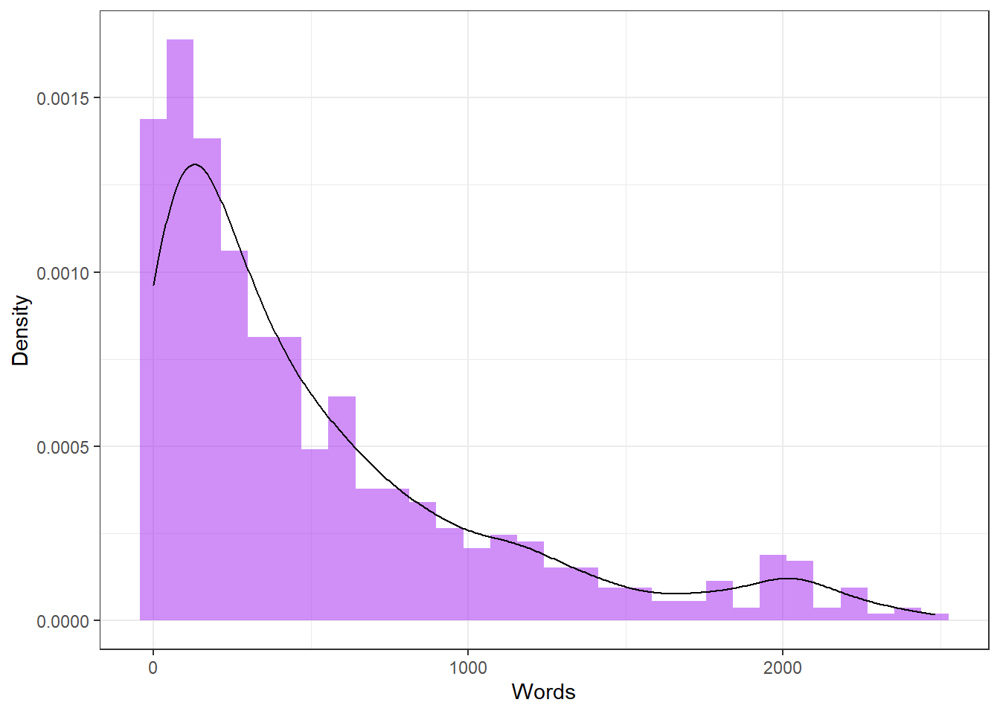
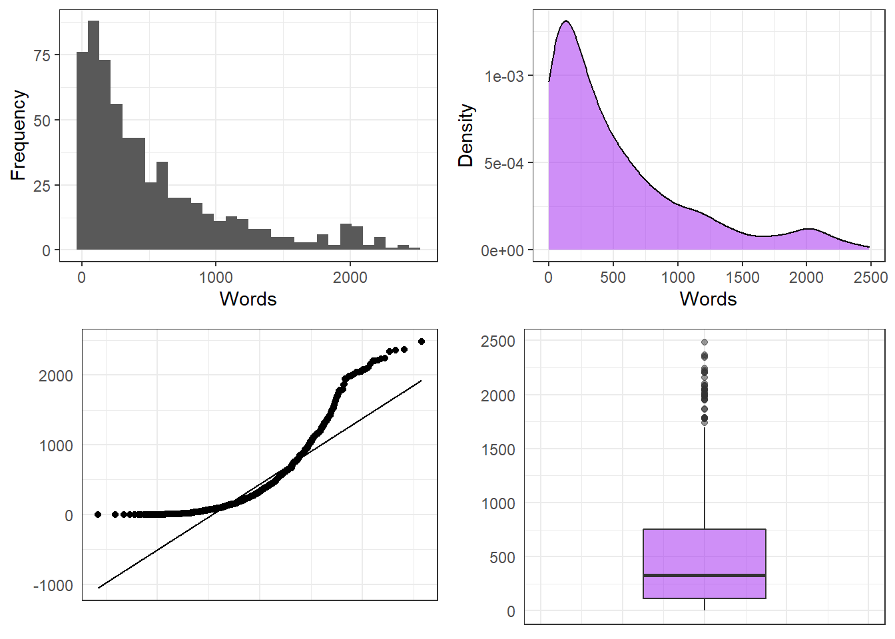
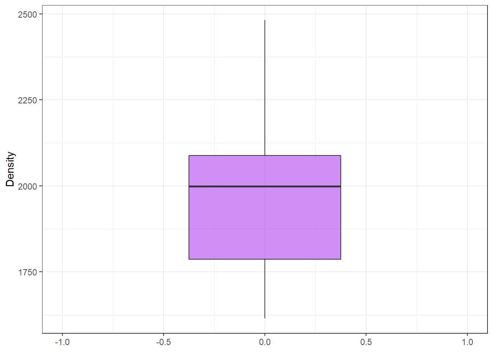
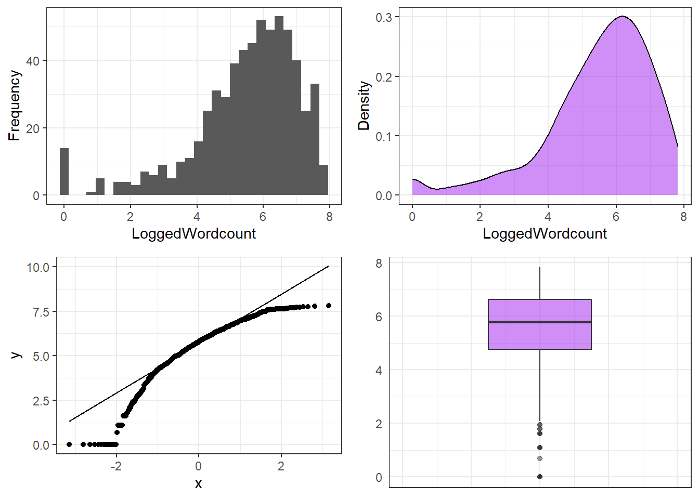
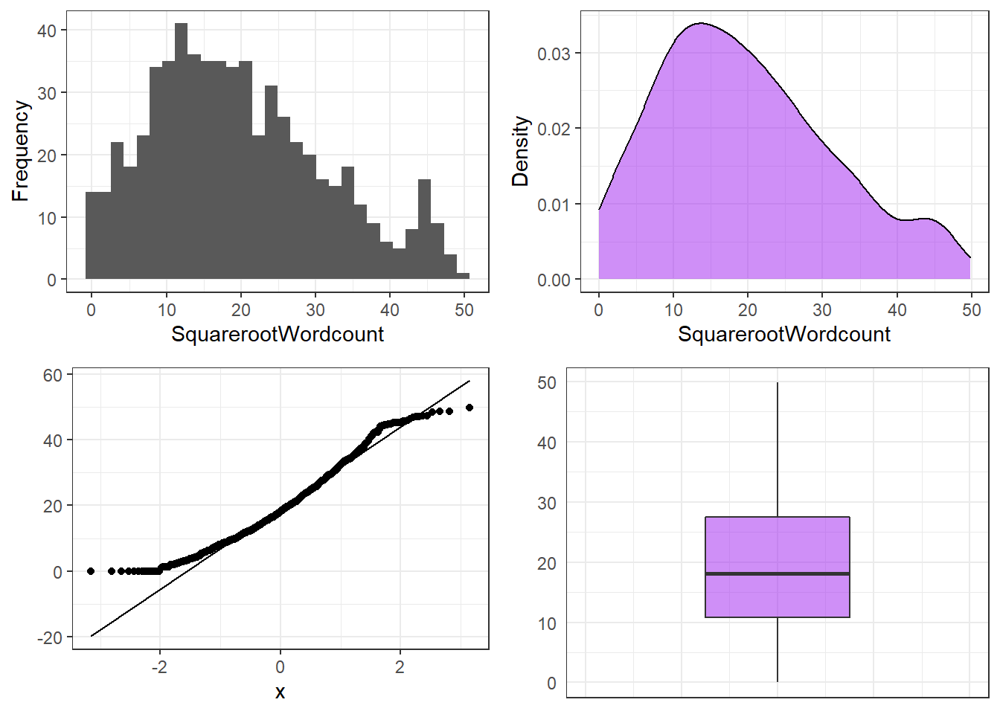

Week 13 Transformations
We have now a basic understanding of the normal distribution and its characteristics. The normal distribution is relevant in statistics because tests build on assumptions that involve the distributions of variables or residuals. If the data is not distributed normally but the test you want to use assumes and therefore requires normality, then there is a problem. In this section, we will have a look at ways to normalize data. In this context, normalization refers to transformations of data that cause the data to exhibit different distributional characteristics (e.g. being more normal). As such, transformations can give answers to questions about what can be done if the distribution of something (errors, data, etc.) is not normal, but it should be normal?
Let us have a look at an example to clarify what is meant here and what can be done when dealing with non-normal data. In a first step, we load some data and test whether it is normal or not. The data represents the word counts of speakers in a corpus.
The figure below shows a histogram of the wordcounts indicating that the word counts are extremely left-skewed.

Next, we test weather the word counts are distributed normally - which is unlikely given the histogram. The test we use here is called the Shapiro-Wilk test and it determines the likelihood with which a given sample is drawn from normally distributed population. If the Shapiro-Wilk test reports a significant result, then this means that the sample is significantly non-normal and unlikely to be drawn from normally distributed population.
##
## Shapiro-Wilk normality test
##
## data: tdat$Words
## W = 0.82322, p-value < 2.2e-16According to the Shapiro-Wilk test, the distribution of the word counts is non-normal. It is important to mention here that the Shapiro-Wilk test is inexact for small samples (N < 60) but to rigorous for large samples (N > 200).
One issue that we face now that we have confirmed that the word counts are non-normal relates to the description of the data. If data are non-normal, then the usual descriptive statistics (mean, median, standard deviation) are not really appropriate because they either assume normality (mean and standard deviation) or they are unfit to report non-normal structure). Therefore, when dealing with non-normal data, it is common to use alternative descriptive statistics.
summary(tdat$Words) # summary for non-normal data## Min. 1st Qu. Median Mean 3rd Qu. Max.
## 0.0 116.0 328.0 523.4 753.0 2482.0Median absolute deviation (MAD)
MAD is a robust measure of the variability and it represents the median of the difference of each observed value from the data’s median. It is thus defined as the median of the absolute deviations from the data’s median.
mad(tdat$Words, constant = 1)## [1] 253Interquartile range (IQR)
The IQR is a measure of dispersion, that is calculated by subtracting the first quartile from the third quartile. The first and third quartiles represent the boundaries of the boxes in boxplots which is why the box in box plots represents the width of the IQR.
IQR(tdat$Words) ## [1] 637Before we continue, we generate four plots that show the distribution of the word counts in more detail to get a more detailed understanding to what extent the data differ from normality.

The plots show that, in addition to being non-normal, there are outliers in the data (see points in the boxplot in the lower right panel).
One way to deal with non-normal data is to transform the data. Here are selected rules of thumb for data transformations that are particularly useful when dealing with language data.
If the data is moderately positively skewed, the best option is to take the square root of the dependent variable:
sqrt(DepVar).If the data is moderately negatively skewed, the best option is to square the dependent variable:
(DepVar)^2.If the data is J shaped, the best option is to transform the dependent variable in the following way:
1/(DepVar + 1).
Before we transform the data, we will center and scale the data which allows us to extract outliers. Thus, we continue by centering and scaling the word counts.
# find outliers (z-value based)
tdat <- tdat %>%
dplyr::mutate(wc = scale(Words, center = TRUE, scale = TRUE))After centering and scaling, we remove data points that exceed +/- 1.96 standard deviations.
# remove values that exceed 1.96 (95%) sds
mydataWoOutliers <- tdat %>%
dplyr::filter(wc >= 1.96 | wc <= -1.96)We can now produce another boxplot to check the distribution of the word counts has become more normal and if there are still outliers in the data.
# find outliers (boxplot)
ggplot(mydataWoOutliers, aes(y = Words))+
# dots in boxplot show outliers
geom_boxplot(fill = "purple", alpha = .5) +
coord_cartesian(x = c(-1, 1)) +
theme_bw() +
labs(y = "Density")
The boxplot looks much better than before, indicating that the data is substantively more normal. In addition, we can log-transform or take the square root of word counts to moderate the skewness of the data.
First, we check if log-transforming the word counts makes them more normal.
tdat <- tdat %>%
dplyr::mutate(LoggedWordcount = log1p(Words),
SquarerootWordcount = sqrt(Words))
p1 <- ggplot(tdat, aes(x = LoggedWordcount)) +
geom_histogram() +
theme_bw() +
labs(y = "Frequency")
p2 <- ggplot(tdat, aes(x = LoggedWordcount)) +
geom_density(fill = "purple", alpha = .5) +
theme_bw() +
labs(y = "Density")
p3 <- ggplot(tdat, aes(sample = LoggedWordcount)) +
geom_qq() +
stat_qq_line() +
theme_bw()
p4 <- ggplot(tdat, aes(y = LoggedWordcount)) +
geom_boxplot(fill = "purple", alpha = .5) +
theme_bw() +
labs(y = "") +
coord_cartesian(xlim = c(-1,1)) +
theme(axis.text.x = element_blank(),
axis.ticks = element_blank())
ggpubr::ggarrange(p1, p2, p3, p4, ncol = 2, nrow = 2)
The transformed word counts are still very skewed - this can have several reasons - for once, we may have chosen an inadequate transformation. Nonetheless, we continue with using a Shapiro-Wilk test to see if the distribution of the logged word counts is approximately normal.
# test for normality
shapiro.test(tdat$LoggedWordcount) # logging not appropriate here##
## Shapiro-Wilk normality test
##
## data: tdat$LoggedWordcount
## W = 0.90171, p-value < 2.2e-16The Shapiro-Wilk test shows that our data is still not non-normal but the visualizations show that it is much more normal compared to the original values.
We now check if taking the square root has made the data more normal.
p1 <- ggplot(tdat, aes(x = SquarerootWordcount)) +
geom_histogram() +
theme_bw() +
labs(y = "Frequency")
p2 <- ggplot(tdat, aes(x = SquarerootWordcount)) +
geom_density(fill = "purple", alpha = .5) +
theme_bw() +
labs(y = "Density")
p3 <- ggplot(tdat, aes(sample = SquarerootWordcount)) +
geom_qq() +
stat_qq_line() +
theme_bw() +
labs(y = "")
p4 <- ggplot(tdat, aes(y = SquarerootWordcount)) +
geom_boxplot(fill = "purple", alpha = .5) +
theme_bw() +
labs(y = "") +
coord_cartesian(xlim = c(-1,1)) +
theme(axis.text.x = element_blank(),
axis.ticks = element_blank())
ggpubr::ggarrange(p1, p2, p3, p4, ncol = 2, nrow = 2)
The visualizations suggest that taking the square root results in a near normal distribution of the data. Again, we use a Shapiro-Wilk test to see if the distribution of the values of the square root of the word counts is approximately normal.
# test for normality
shapiro.test(tdat$SquarerootWordcount) # square root transforming appropriate here##
## Shapiro-Wilk normality test
##
## data: tdat$SquarerootWordcount
## W = 0.96771, p-value = 2.075e-10Unfortunately, even the square root transformation has not made the data fully normal as the distribution of the transformed data still differs significantly from a normal distribution as shown by the Shapiro-Wilk test.